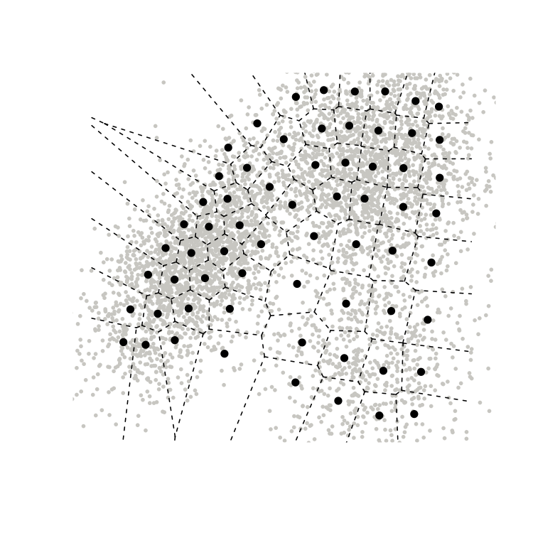
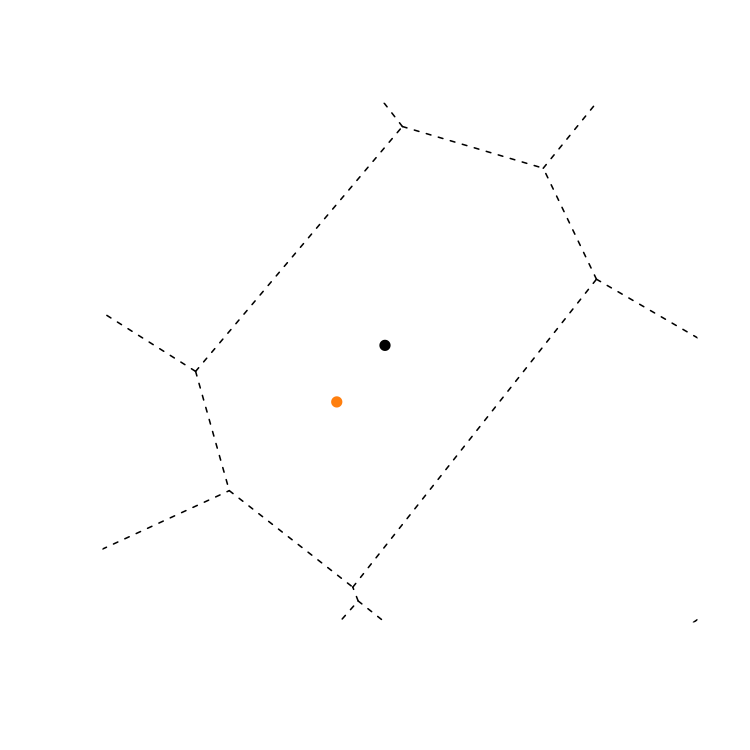
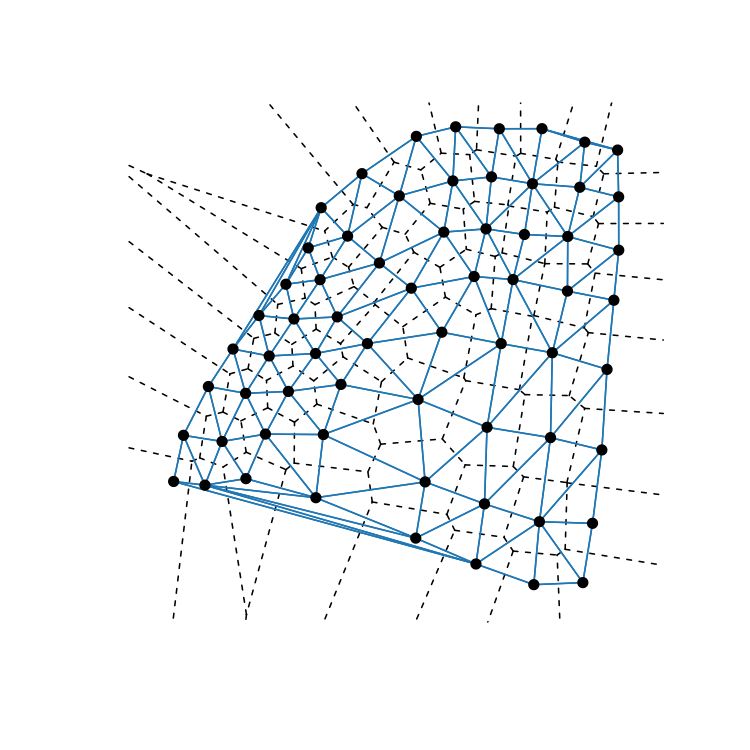
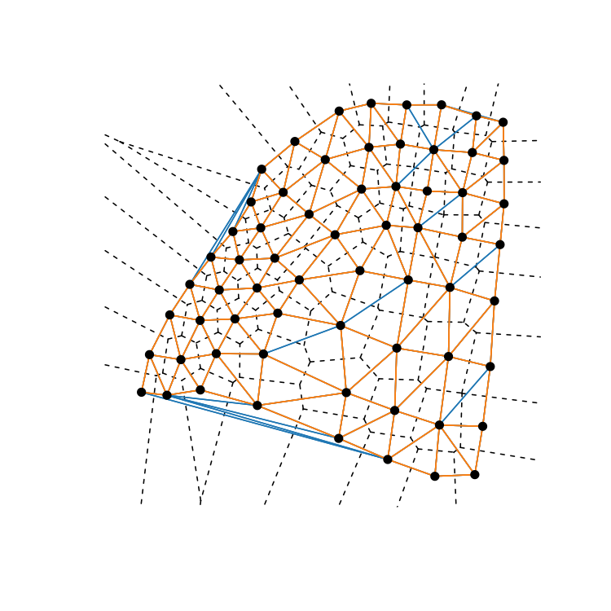
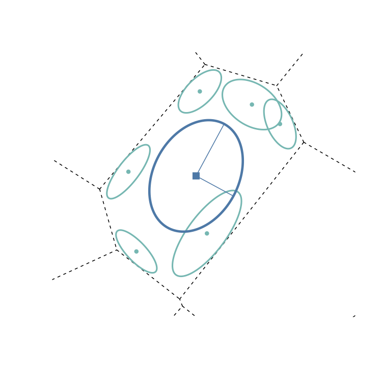
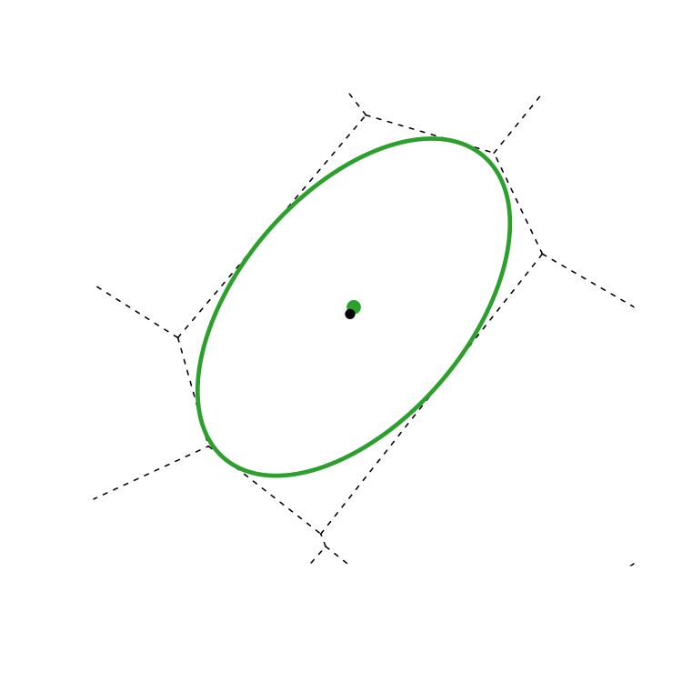

Chapter 1 Background
1.1 Voronoi Tessellations
Vector quantization [6] is a common task in data compression whereby data vectors \(x\) are represented by a discrete set of \(n_W\) prototype vectors \(W = \{w_j \in \mathbb{R}^d\}_{j=1}^{n_W}\) according to some assignment rule \(j^* = BMU1(x)\), which returns the index \(j^*\) of \(x\)’s Best Matching Unit in \(W\). Likewise, an ancillary assignment rule \(k^* = BMU2(x)\) returns the second Best Matching Unit to \(x\) (again, from \(W\)). The function \(BMU\) can be any valid distance; here, we only consider the most common case where the BMU is selected via Euclidean distance: \[ j^* = BMU1(x) = \arg\min_j \, ||x - w_j||_2\] and \[ k^* = BMU2(x) = \arg\min_{k, k\neq j^*} \, ||x - w_k||_2.\] The region \(V_j \subset \mathbb{R}^d\) for which \(j\) is \(BMU1\) is the first-order Voronoi cell generated by \(w_j\): \[ V_j = \{x \, : \, BMU1(x) = j \}\] The collection of cells \(\{V_j\}\) tessellates (or tiles) \(\mathbb{R}^d\) and is known as the first-order Voronoi tessellation. Similarly, the region \(V_{jk} \subset \mathbb{R}^d\) for which \(j\) is \(BMU1\) and \(k\) is \(BMU2\) is the second-order Voronoi cell generated by the interaction of \(w_j\) and \(w_k\): \[ V_{jk} = \{x \, : \, BMU1(x) = j \quad \& \quad BMU2(x) = k\}.\] Again, the collection \(\{V_{jk}\}\) produces a (different) tessellation of \(\mathbb{R}^d\). An example of the learned prototypes (black points) of synthetic two-dimensional data (gray points) and the induced first-order Voronoi tessellation (dashed lines) is given below: 
One could, of course, extend this logic to produce higher-order (\(3,4,\ldots,n_W-1\)) tessellations of \(\mathbb{R}^d\) (see [7] for further information on higher-order Voronoi tessellations). In VorVQ we only consider the first (Vor1) and second (Vor2) order cases, as they have been shown to faciliate manifold inference from learned vector quantizers ([8], [9]).
1.2 Voronoi Half-Plane Representations
The definitions of each Vor1 and Vor2 cell above specify convex polyhedra in \(\mathbb{R}^d\). As such, each \(V_j\) or \(V_{jk}\) can be described geometrically using the half-plane representation [10] of their associated polyhedra, which is of the form \(Ax \leq b\) for some coefficient matrix \(A\) and upper bound vector \(b\). For example, transforming the Vor1 definition above to its half-plane representation is straightforward: \[\begin{align*} V_j &= \{x \, : \, ||x - w_j||_2 \leq ||x - w_k||_2 \} \quad \forall \, k \neq j \\ &= \{x \, : \, (w_k - w_j)^Tx \leq \frac{1}{2}(||w_k||_2^2 - ||w_j||_2^2) \} \quad \forall \, k \neq j \\ &= \{x \, : \, A_j x \leq b_j \} \end{align*}\] where \(A_j\) is a \((n_W-1) \times d\) matrix and \(b_j\) is a \((n_W-1)\) length vector. If global dimension-wise lower and upper bounds of the tessellated region are appended to the above system of inequalities then each Voronoi cell is guaranteed to be a closed polytope.
The form \(V_j = \{A_j x \leq b_j \}\) is more amenable to performing optimization over each Voronoi cell. Various different objective functions, constrained to \(V_j\), give rise to most of the computation on offer by VorVQ.
1.3 Chebyshev Centers
The computation of the ellipsoidal polytope approximators discussed in the ellipsoid section requires specifying an interior point to each Voronoi polytope. While Vor1 cells have a natural, known, interior point (the prototype \(w_j\) which generates each cell), Vor2 cells do not. There are myriad ways of finding interior points in polytopes; VorVQ provides functionality to compute each Voronoi cell’s Chebyshev center, which is a relatively lightweight method for generating an interior point as the center of the largest sphere which can be inscribed in the polytope. Formally, center \(c\) is returned by the following linear program [1]:
\[\begin{align*}
\text{maximize} &\quad r
\\ \text{subject to:} &
\\ a_i^Tc + r ||a_i|| &\leq b_i \, \forall \, i
\end{align*}\]
where \(a_i\) and \(b_i\) are the \(i\)-th row of \(A\) and \(b\) as previously defined. Note that the above LP is only bounded if \(Ax \leq b\) represents a closed polytope, which is ensured by appending the global bounds of the tessellated region to the system of linear inequalities. A Voronoi polytope’s Chebyshev center (orange) is compared to its prototype location (black) for a two-dimensional Voronoi polytope below.

1.4 Prototype Proximity Graphs
In general, a proximity graph of a vector quantizer’s prototypes is a graph whose vertices are the prototypes and whose edges represent some type of neighbor relationship between prototypes. Probably the most famous proximity graph is the Delaunay triangulation [2] which connects prototypes \(j\) and \(k\) if (and only if) their Voronoi cells \(V_j\) and \(V_k\) intersect (share a face) in \(\mathbb{R}^d\). Various methods exist to compute a Delaunay graph in low dimension (e.g., see the geometry package), but such methods typically involve storing a list of the vertices of the Delaunay “triangles” (simplexes, in higher dimension) and become infeasible as dimension grows. To avoid this bottleneck altogether VorVQ relies on the linear programming method of [10] to identify whether an edge exists between prototypes \(j\) and \(k\) in the Delaunay adjacency matrix, which we denote \(DADJ\). Briefly, recall that the linear system defining \(V_j\) has components
\[A = \left(
\begin{array}{c}
(w_1 - w_j)^T
\\ (w_2 - w_j)^T
\\ \vdots
\\ (w_{j-1} - w_j)^T
\\ (w_{j+1} - w_j)^T
\\ \vdots
\\ (w_{n_W} - w_j)^T
\end{array}
\right)
\qquad
b = \frac{1}{2} \times \left(
\begin{array}{c}
||w_1||^2 - ||w_j||^2
\\ ||w_2||^2 - ||w_j||^2
\\ \vdots
\\ ||w_{j-1}||^2 - ||w_j||^2
\\ ||w_{j+1}||^2 - ||w_j||^2
\\ \vdots
\\ ||w_{n_W}||^2 - ||w_j||^2
\end{array}
\right)
\]
Let \(a_k^T\) denote the the row of \(A\) involving \(w_j\) and \(w_k\), and note that, if \(V_j\) and \(V_k\) share a face, \(a_k\) will be orthogonal to it. Consider the primal / dual LPs
\[
\begin{array}{ccccc}
& \text{Primal} & \qquad \qquad & & \text{Dual}
\\ \max\limits_x & a_k^T x & & \min\limits_y & b^T y
\\ \text{s.t.} & Ax \leq b & & \text{s.t.} & A^Ty = a_k
\\ & & & & y \geq 0
\end{array}
\]
The primal optimum \(x^*\) will lie on the shared face between \(V_j\) and \(V_k\) if it exists; the dual optimum \(y_k^*\) corresponding to the \(k\)-th row of \(A\) will be non-zero (denoting the constraint is binding) if this is the case. Thus \(DADJ_{jk} = DADJ_{kj} = 1\) if the dual optimum in the above is strictly positive: \(y_k^* > 0\). By convention, \(DADJ_{jk}=0\) implies \(V_j\) and \(V_k\) are not adjacenct. Relying on symmetry, \(n_W \times (n_W -1)/2\) linear programs must be constructed and solved to determine all entries of \(DADJ\). This is cumbersome but still feasible as each LP test can be performed in parallel. The Delaunay triangulation of the first-order Voronoi tessellation given above is:

Although inherently parallelizable, the computational effort required to compute the full Delaunay adjacency matrix can be quite large. As discussed above a LP must be solved for each unique pair of first-order Voronoi cells in the tessellation, which is \(\mathcal{O}(n_W^2)\) separate optimizations. More, the complexity of each LP grows with the data dimension \(d\). VorVQ utilizes parallel computation and the Gurobi solver which is, to our knowledge, the fastest LP solver available, but the cumulative time required to compute \(DADJ\) can still be improved.
To achieve this, VorVQ employs an intelligent search strategy to avoid solving the Delaunay LP for all \(n_W(n_W-1)/2\) possible adjacencies. This strategy relies heavily on the Gabriel graph [3] of VQ prototypes, whose adjacency matrix we denote by \(GADJ\). The Gabriel graph is another proximity graph which places an edge between vertices \(w_j\) and \(w_k\) IFF the ball whose diameter has endpoints \(w_j\) and \(w_k\) contains no other vertices \(w_l\). That is, if \(\bar{w_{jk}}\) is the midpoint between \(w_j\) and \(w_k\), and \(d(w_j,w_k)\) is their Euclidean distance, then
\[
GADJ_{jk} = \begin{cases}
1 & \#\{ l \, : \, d(w_l, \bar{w_{jk}}) < \frac{1}{2} d(w_j,w_k)\} = 0
\\ 0 & \text{else}
\end{cases}
\]
The Gabriel graph of the learned prototypes of the synthetic two-dimensional data is shown below (in orange edges), overlain on the Delaunay graph from above (in blue).

It is clear that many, but not all, Delaunay edges exist in the Gabriel graph; what is not clear from the above, but has been proven [11], is that Gabriel graphs are proper sub-graphs of Delaunay graphs. Further, they are guaranteed to be connected. VorVQ exploits these two properties to effectively “seed” the Delaunay graph computation in two different ways. First, as a Delaunay sub-graph, any Gabriel edge is necessarily a Delaunay edge (so Gabriel edges do not need to be tested via the Delaunay LP). Second, as a sub-triangulation, we can intelligently focus attention on (and only test) special pairs of vertices for Delaunay adjacency. These “special pairs” are those vertices which, if connected, would help complete an existing partial triangle (simplex) in the \(GADJ\); such pairs necessarily are within geodesic distance = 2 on \(GADJ\). After identification and Delaunay testing of such pairs, this process can be repeated until there are no un-tested vertex pairs of geodesic distance = 2 in the updated \(DADJ\). Pseudo-code for this intelligent searching is given below:
In experiments the above algorithm has resulted in a 20-90% reduction in the computational effort expended to compute the full \(DADJ\), excluding the costing of computing the initial \(GADJ\). Luckily, the latter also has a parallel implementation in VorVQ making the initialization step very fast for any set of prototypes of reasonable size for a vector quantizer.
1.5 Polytope Approximating Ellipsoids
As Voronoi polytopes are often highly irregular (e.g., they have drastically varying number of faces, or no observable symmetry), a study of their geometry usually proceeds by investigating a polytope approximator. Ellipsoids are a common approximator as their geometry is well understood and their functional form easy to manipulate. VorVQ offers two such approximators: the Dikin ellipsoid and Maximum Volume Iinscribed Ellipsoid (MVIE), each denoted by \(\mathcal{E}\) and defined by a center vector \(c\) and a \(d \times d\) rotation \(E\) of the following form:
\[ \mathcal{E} = \{x \, : \, (x - c)^T E^{-1} (x-c) \leq 1 \}.\]
1.5.1 Dikin Ellipsoids
The so-called Dikin ellipsoid \(\mathcal{E}_{\mathcal{D}}\), introduced by Dikin [5] (in Russian) but also discussed in [1], was originally put forth as a tool for an early interior point method for the solution of linear programs. Consider an arbitrary LP with objective \(g(y)\) and feasible region \(P \coloneqq Ay \leq b\), where \(y \in \mathbb{R}^d\), \(A \in \mathbb{R}^{m \times d}\) with rows \(a_i^T\) and \(b \in \mathbb{R}^m\). At iteration \(k\), given \(y_k \in P\), the method computes the Dikin ellipsoid centered at \(y_k\), \(\mathcal{E}_{\mathcal{D}}(y_k, E_{\mathcal{D}}(y_k))\), and updates \(y_{k+1} = \arg\min\limits_{y \in \mathcal{E}_{\mathcal{D}}} g(y)\) until convergence. The ellipsoidal transformation \(E_{\mathcal{D}}(y)\) is given by the Hessian of the logarithmic barrier function \[ \text{barrier}(y) = -\sum\limits_{i=1}^m \log(b_i - a_i^T y) \] which accumulates the log distances (i.e., slacks) to each of the hyperplanes defining \(P\) (and we note for completeness is the objective function whose over \(y\) is the analytic center of \(P\)). Thus \[ E_{\mathcal{D}}(y) = \frac{\partial^2 \text{barrier}(y)}{\partial y^2} = \sum\limits_{i=1}^m \left(\frac{1}{b_i - a_i^T y}\right)^2 a_i a_i^T = A^T \, \mathrm{diag}(1 / (b - Ay))^2 \, A. \] The Dikin ellipsoid approximates the local geometry of the polytope around \(y\): bounding hyperplanes that are closer to \(y\) exert greater influence on its curvature and rotation than do those that are farther away. Several Dikin ellipsoids within a single first-order Voronoi cell are shown below: the blue ellipsoid is centered at the prototype generating the cell, while the teal are centered at various other points within the polytope showing how the Dikin ellipsoid conforms to local geometry. 
1.5.2 Maximum Volume Inscribed Ellipsoids
Predictably, the MVIE \(\mathcal{E}_{\mathcal{I}}\) is inscribed in a polytope \(P \coloneqq Ay \leq b\) with maximum volume. Determining the MVIE is not trivial, requiring sophisticated interior point methods in convex optimization. In [4], Zhang and Gao develop a practical interior-point method for computation of MVIEs in arbitrary dimension. Beginning with any interior point \(c_{\mathcal{I}}\) as initial center, the algorithm first computes the Dikin ellipsoid as an initial transformation \(E_{\mathcal{I}}\). The remaining computational effort iteratively updates \(c_{\mathcal{I}}\) and \(E_{\mathcal{I}}\) to maximize log det \(E_{\mathcal{I}}\) subject to \(\mathcal{E}_{\mathcal{I}} \subset P\). Upon convergence, the optimal \(\mathcal{E}_{\mathcal{I}}\) can be taken as a suitable ellipsoidal approximation of \(P\), as the MVIE shown below (in green, with starting center point in black) indicates:

VorVQ computes the MVIEs for all cells in the (first or second-order) Voronoi tessellation using a version of Zhang’s code translated to C++ from Matlab and adapted for parallel implementation.
References
[1] S. Boyd, S. P. Boyd, and L. Vandenberghe, Convex optimization. Cambridge university press, 2004.
[2] B. Delaunay and others, “Sur la sphere vide,” Izv. Akad. Nauk SSSR, Otdelenie Matematicheskii i Estestvennyka Nauk, vol. 7, nos. 793-800, pp. 1–2, 1934.
[3] K. R. Gabriel and R. R. Sokal, “A new statistical approach to geographic variation analysis,” Systematic Zoology, vol. 18, no. 3, pp. 259–278, 1969.
[4] Y. Zhang and L. Gao, “On numerical solution of the maximum volume ellipsoid problem,” SIAM Journal on Optimization, vol. 14, no. 1, pp. 53–76, 2003.
[5] I. Dikin, “Iterative solution of problems of linear and quadratic programming,” in Doklady akademii nauk, 1967, vol. 174, pp. 747–748.
[6] R. Gray, “Vector quantization,” IEEE ASSP Magazine, vol. 1, no. 2, pp. 4–29, 1984.
[7] A. Okabe, B. Boots, K. Sugihara, and S. N. Chiu, Spatial tessellations: Concepts and applications of voronoi diagrams. Wiley, 2000.
[8] T. Martinetz and K. Schulten, “Topology representing networks,” Neural Networks, vol. 7, no. 3, pp. 507–522, 1994.
[9] K. Taşdemir and E. Merényi, “Exploiting data topology in visualization and clustering of self-organizing maps,” IEEE Transactions on Neural Networks, vol. 20, no. 4, pp. 549–562, 2009.
[10] E. Agrell, “A method for examining vector quantizer structures,” in Proceedings. IEEE international symposium on information theory, 1993, pp. 394–394.
[11] J. W. Jaromczyk and G. T. Toussaint, “Relative neighborhood graphs and their relatives,” Proceedings of the IEEE, vol. 80, no. 9, pp. 1502–1517, 1992.